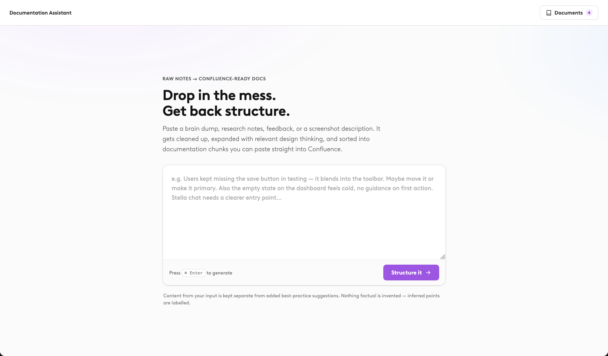
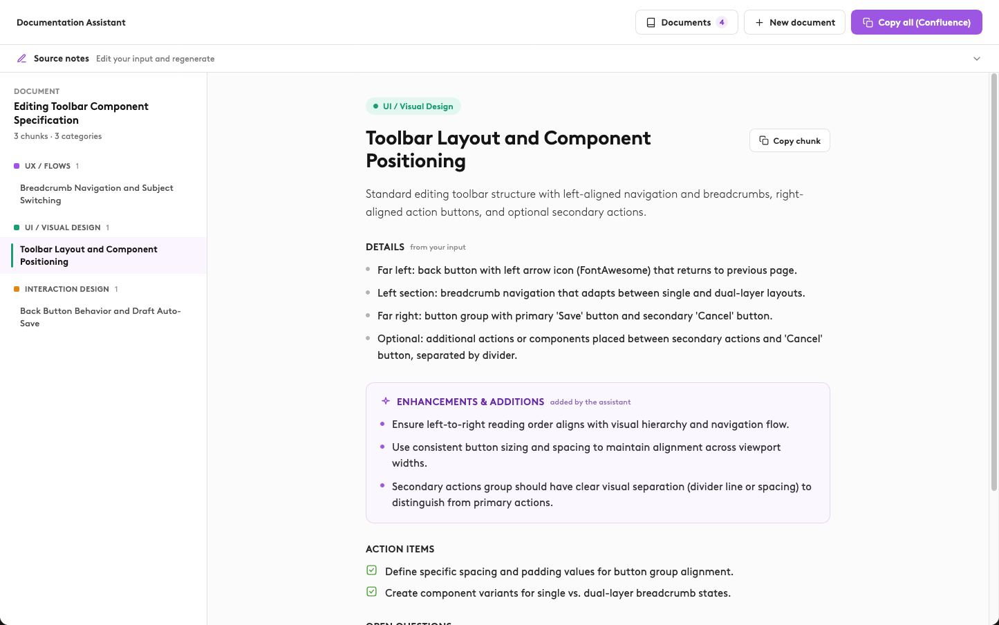

Design Documentation
From Design Notes to scalable and standard Documentation.
The Problem
As the only designer on the team, a lot of design knowledge naturally lives with me. As the product grows, that can quickly become messy — especially when it comes to documenting decisions, explaining patterns, and passing that information around in a consistent format.
I wanted to find a way to make that knowledge easier to capture and share without adding another time-consuming task to my workflow.
The Idea
Design documentation is important, but creating and maintaining it can quickly become a repetitive task. Designers already have most of the knowledge — often scattered across notes, decisions, and definitions.
I created an AI-powered tool that turns those inputs into structured documentation.
How it works
Generating documentation is only useful if that information can easily reach the people who need it.
To make the workflow scalable, I added the ability to export the generated documentation directly to Confluence, where the team's existing documentation lives.
This turns the tool from a personal AI assistant into a bridge between my design workflow and the wider team's knowledge base — making it easier to share, maintain, and reuse design knowledge.
Personal note → System definition → New formatted docunentation



Designing the experience
The main challenge was making AI feel like a design tool rather than a chatbot.
The interface focuses on the user's existing workflow: provide context, review the generated content, and decide what should become part of the documentation.
This keeps the designer in control while removing much of the repetitive writing and structuring work.
The impact
The tool reduces the effort required to document design decisions and creates a more consistent approach to documentation.
More importantly, it turns documentation from something designers need to create separately into something that can naturally emerge from their existing design process.
AI doesn't replace the designer's knowledge — it helps turn that knowledge into something useful.